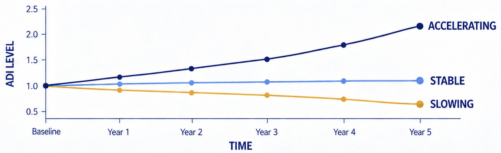

EMII
Exposome-Mediated Impact Index
Lifelong exposures accumulate as biological burden.
Aging is more than the passage of time. It reflects the lifelong accumulation of environmental, lifestyle and sensory influences—the Exposome.
A&S combines Exposome science, Sensory Science and Bio-Responsive Ingredients to explore how neurobiological pathways may be regulated to reduce aging-related impacts, strengthen biological resilience and support healthier aging.
Lifelong exposures accumulate as biological burden.
As EMII rises, biological burden increases and the aging cascade accelerates.
DNA damage · Telomere shortening · Epigenetic changes · Proteostasis loss
Neural · Metabolic · Immune · Skin · Physiological decline
Aging-related changes propagate across biological scales.
The lived outcome of cumulative biological change.
An integrated view of molecular changes, physiological function and human aging over time.
A systems view of how metabolic, physical, neural and signaling changes interact over time.
Changes in mitochondrial function and glucose regulation can reduce cellular energy availability and metabolic flexibility.
Mitochondrial function · Glucose regulation
Loss of muscle mass, shifts in fat distribution and declining mobility can reduce strength and physical resilience.
Muscle mass · Fat distribution · Mobility
Changes in neuronal health and brain volume can affect memory, attention and cognitive performance.
Neuronal health · Brain volume changes
Disrupted cell-to-cell communication and declining stem-cell function can weaken repair, adaptation and biological balance.
Cell communication · Stem-cell function
Developed by the A&S research team, ADI is a research-based computational index. By integrating multiple aging-related parameters, it is designed to observe the current degree of aging and track how its progression and rate change over time, providing a systematic framework for aging research.
The cumulative biological impact of environmental, lifestyle and sensory exposures.
Individual biological characteristics that influence vulnerability to aging-related change.
Genetics · Epigenetics · Baseline physiology
Higher EBII or IP increases ADI, while stronger AR moderates it.
The biological capacity to maintain balance, adapt, repair and recover.
ADI is interpreted as a continuum rather than a diagnosis. Its value reflects the relative degree and pace of aging-related change observed within the A&S research framework.
Direction Matters. Rate Matters.
A single ADI value reflects a point in time. Repeated observations reveal whether aging-related change is stable, slowing or accelerating.

Scroll horizontally to view the full chart.
A snapshot of aging-related status
How ADI changes over repeated observations
How quickly the trajectory changes